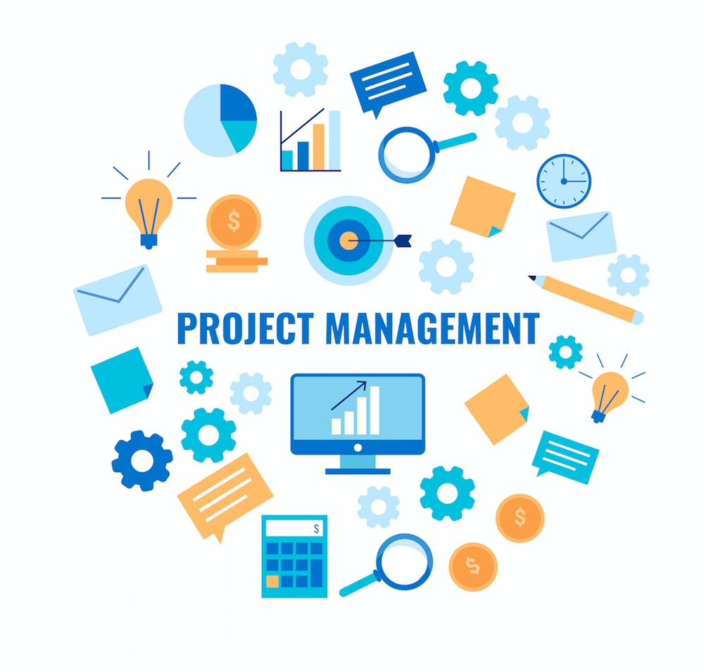

ADMINISTRACIÓN DE PROYECTOS
La dirección de proyectos es la aplicación de conocimientos, habilidades, herramientas y técnicas a las actividades del proyecto para cumplir con los requisitos del mismo. Se logra mediante la aplicación e integración adecuadas de los procesos de dirección de proyectos identificados para el proyecto. La dirección de proyectos permite a las organizaciones ejecutar proyectos de manera eficaz y eficiente.
En el actual entorno de negocios, los líderes de las organizaciones deben ser capaces de gestionar con presupuestos más ajustados, cronogramas más cortos, escasez de recursos y una tecnología en constante cambio.
Una dirección de proyectos eficaz ayuda a individuos, grupos y organizaciones públicas y privadas a:
- Cumplir los objetivos del negocio
- Satisfacer las expectativas de los interesados
- Ser más predecibles
- Aumentar las posibilidades de éxito
- Entregar los productos adecuados en el momento adecuado
- Resolver problemas e incidentes
- Responder a los riesgos de manera oportuna
- Optimizar el uso de los recursos de la organización
Áreas de gestión en la administración de proyectos:


Gestión de la Integración del Proyecto.
Incluye los procesos y actividades para identificar, definir, combinar, unificar y coordinar los diversos procesos y actividades de dirección del proyecto dentro de los Grupos de Procesos de la Dirección de Proyectos.

Gestión del Alcance del Proyecto.
Incluye los procesos requeridos para garantizar que el
proyecto incluye todo el trabajo requerido y únicamente el
trabajo requerido para completarlo con éxito.
Gestión del Cronograma del Proyecto.
Incluye los procesos requeridos para administrar la finalización del proyecto a tiempo
Gestión de los Costos del Proyecto.
Incluye los procesos involucrados en planificar, estimar, presupuestar, financiar, obtener financiamiento, gestionar y controlar los costos de modo que se complete el proyecto dentro del presupuesto aprobado.

Gestión de la Calidad del Proyecto.
Incluye los procesos para incorporar la política de calidad
de la organización en cuanto a la planificación, gestión y
control de los requisitos de calidad del proyecto y el
producto, a fin de satisfacer las expectativas de los
interesados.
Gestión de los Recursos del Proyecto.
Incluye los procesos para identificar, adquirir y gestionar los recursos necesarios para la conclusión exitosa del proyecto.
Gestión de las Comunicaciones del Proyecto.
Incluye los procesos requeridos para garantizar que la planificación, recopilación, creación, distribución, almacenamiento, recuperación, gestión, control, monitoreo y disposición final de la información del proyecto sean oportunos y adecuados.
Gestión de los Riesgos del Proyecto.
Incluye los procesos para llevar a cabo la planificación de
la gestión, identificación, análisis, planificación de
respuesta, implementación de respuesta y monitoreo de los
riesgos de un proyecto
Gestión de las Adquisiciones del Proyecto.
Incluye los procesos necesarios para la compra o adquisición de los productos, servicios o resultados requeridos por fuera del equipo del proyecto
Gestión de los Interesados del Proyecto.
Incluye los procesos requeridos para identificar a las personas, grupos u organizaciones que pueden afectar o ser afectados por el proyecto, para analizar las expectativas de los interesados y su impacto en el proyecto, y para desarrollar estrategias de gestión adecuadas a fin de lograr la participación eficaz de los interesados en las decisiones y en la ejecución del proyecto.